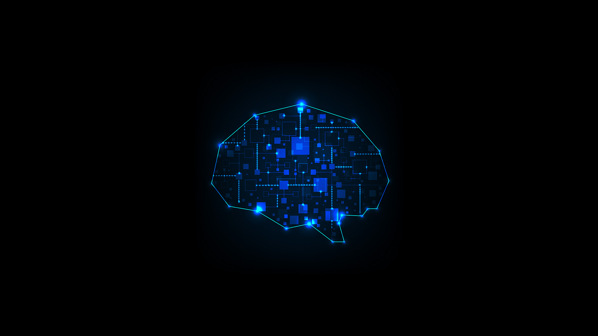

脑机接口（Brain-Computer Interface, BCI）技术作为当今世界最前沿的科技领域之一，正在逐渐改变人类与机器之间的互动方式。中国在这一领域的快速发展，不仅展示了其在科技创新方面的强大实力，也为未来的医疗、智能设备控制以及人类认知科学的深入研究提供了新的契机。在这个国庆节，我们有理由为中国在脑机接口技术上的突破感到自豪，也对未来这一技术的发展充满期待。
脑机接口是一种将人类大脑与外部设备直接连接的技术，通过识别和解码大脑信号，实现对外部设备的控制。传统的人机交互方式依赖于物理输入设备，如键盘、鼠标和触摸屏，而脑机接口则不需要任何物理介质，只需通过大脑的意识活动就能实现指令传达。这一突破性的技术为人类提供了一种全新的沟通和控制方式，特别在残疾人康复、智能设备控制以及虚拟现实领域有着广泛的应用前景。
中国在脑机接口领域的研究和应用上已经取得了显著的进展。例如，中国多个顶尖科研机构和高校正在深入探索脑电波的识别和信号解码技术。近年来，中国研究团队成功实现了通过脑机接口控制机械臂和机器人，这一技术在帮助瘫痪患者恢复肢体活动方面具有重要意义。此外，中国的科研团队还在开发能够实现实时脑电波监测和数据传输的无线脑机接口设备，这些设备有望在未来应用于医疗监护、智能家居控制等多个领域。
除了在实验室中的研究，中国的企业也在积极推动脑机接口技术的商业化应用。许多中国初创公司和科技巨头都在加大对脑机接口技术的研发投入，探索如何将这一技术更好地应用于消费电子和医疗康复领域。例如，有些公司已经推出了基于脑电波控制的智能头戴设备，可以通过用户的意识活动实现对游戏、音乐播放、智能家居等设备的控制。这样的产品不仅展示了中国科技企业的创新能力，也为未来脑机接口技术的普及奠定了基础。
中国政府对于脑机接口技术的发展也给予了高度重视和支持。近年来，中国发布了多项政策，鼓励科研机构和企业加大对前沿技术的投入，并加强与国际科技机构的合作。这些政策的实施，不仅加速了中国在脑机接口领域的技术突破，也为中国在国际科技舞台上争取更大话语权创造了机会。此外，中国还在积极推动脑机接口技术的标准化和规范化，以确保未来这一技术的应用安全和稳定。
脑机接口技术的发展不仅仅是科技领域的进步，它还引发了关于人类未来生活方式的深刻思考。随着技术的不断成熟，脑机接口有可能成为人类和机器互动的主要方式之一。未来，人们通过意识活动就可以操控家居设备、驾驶车辆、甚至是在虚拟世界中实现无障碍交流。中国在这一领域的技术突破和市场应用，标志着中国在全球科技创新领域的领先地位，同时也为全球科技进步贡献了中国智慧。
然而，脑机接口技术的应用也面临着诸多挑战和伦理问题。例如，如何保障大脑信号的隐私和安全？如何防止技术被滥用于监控和控制人类思想？这些问题需要政府、企业和学术界共同探讨，并制定合理的政策和规范来引导这一技术的健康发展。中国在推动脑机接口技术发展的同时，也积极参与国际伦理讨论和技术标准的制定，以确保这一技术在全球范围内得到安全、合理的应用。
总之，脑机接口技术是中国科技创新的重要领域之一，其发展和应用不仅展示了中国在前沿科技领域的技术实力，更体现了中国在全球科技竞争中不懈追求突破的精神。在国庆节这个特别的日子里，我们为中国在这一领域取得的成就感到骄傲，也期待未来脑机接口技术能够更加普及，为人类的生活带来更多便利和可能性。相信在不久的将来，中国将在脑机接口技术的国际舞台上扮演更重要的角色，引领全球科技的未来。